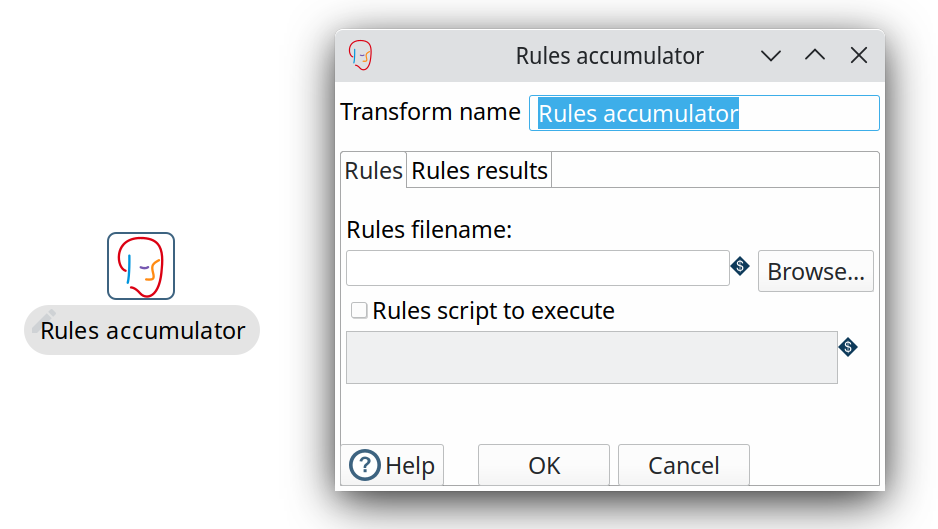
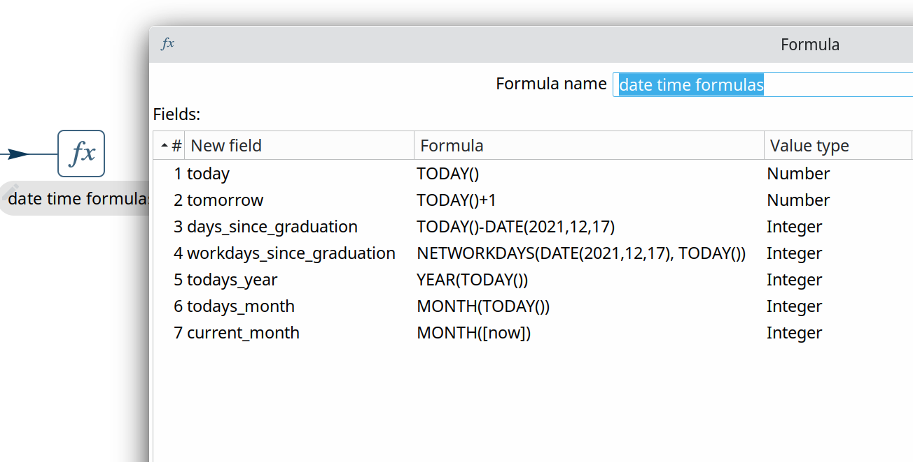

After three months of work, the Apache Hop community is pleased to announce the general availability of Apache Hop 2.0.0.
A huge thank you to everyone who made this possible.
or download Hop 2.0.0 right away.
Upgrade to Java 11
Upgrading all of the Apache Hop code to not only run but more importantly build reliably on Java 11 instead of Java 8 is not a small task, and therefore justified a major release.
The upgrade to Java 11 has been in te making for months, meticulously fixing and extending the tests and code issues. With this 2.0 release, Hop runs reliably on Java 11.
We used the necessary code changes for the Java 11 upgrade as an opportunity to make some code cleanup and breaking API changes. Check the docs to see which changes you need to make to upgrade your Hop plugins to 2.0.
Chinese translations
Apache Hop is increasingly popular in Asia, with a large and growing Chinese community.
Hop 2.0.0 includes a major contribution (thanks, Shl Xue!) to translate Apache Hop to Simplified Chinese (zh_CN). This contribution includes updates and improvements to Hop Translator.

New transform plugins
Apache Avro File Output
The Apache Avro File Output transforms writes to binary files or fields in Avro Binary or JSON formats.

Apache Doris Bulk Loader
Apache Doris is a modern MPP analytical database product. It can provide sub-second queries and efficient real-time data analysis. With it’s distributed architecture, up to 10PB level datasets will be well-supported and easy to operate.
The Apache Doris Bulk Loader transform allows you to insert data into Apache Doris at high speed and volume, making it a faster way to load data than using the traditional database insert statements.
The Apache Doris Bulk Loader transform was kindly contributed by the Apache Doris community.

Drools Rules Accumulator
The Drools Accumulator transform collects incoming rows and executes them against a rule set. This may be useful to determine the answer to a question or otherwise analyze a dataset.

Drools Rules Executor
The Drools Rule Executor transform allows fields of incoming rows to be executed against a rule set. This may be useful to determine additional information or route rows onto another transform.

Many thanks to add these transforms to Apache Hop, Sergio!
Formula
The Formula transform allows you to apply Excel-like formulas and functions on fields in a pipeline.
The screenshot below shows a couple of examples of date and time functions with the Apache Hop graduation date.

Apache Beam upgrade
Apache Beam is an advanced unified programming model that allows you to implement batch and streaming data processing jobs that run on any execution engine. Popular execution engines are for example Apache Spark, Apache Flink or Google Cloud Platform Dataflow.
Apache Beam has been an important plugin in Apache Hop, and was upgraded to 2.38.0 with Apache Spark 3.1.3 and Apache Flink 1.14.4.

Various
Variable Annotations
A new @Variable annotation makes it easier for Hop developers to declare variables at the right place in the code.
Static final fields annotated with "Variable" are automatically recognized and registered as a described variable.
Thanks, Nicolas!
Dimension Lookup/Update new dialog
The Dimension Lookup/Update transform has been around for ages. Over time, so much functionality was added to the transform’s dialog that it became cluttered.
The dialog has been cleaned up and now shows the available options in 4 tabs: keys, fields, technical key and versioning.

Integration tests
The library of integration tests continues to grow. Hop 2.0 was tested on a daily basis with close to 200 integration tests. These integration tests make sure that bugs that are fixed remain fixed (prevent regressions), to make sure all existing workflows and pipelines continue to work as Hop evolves, and help to keep Hop as a platform as robust and reliable as possible.
Feel free to follow the status of the integration tests at any moment on the Hop CI Builds.
Community
The Hop community continues to grow!
The overview below shows the community growth compared to the 1.2.0 release in March:
Without community interaction and contribution, Hop is just a coding club! Please feel free to join, participate in the discussion, test, file bug tickets on the software or documentation, … Contributing is a lot more than writing code.
Check out our contribution guides and Code of Conduct to find out more.
JIRA
Hop 2.0.0 contains work on 151 tickets:
-
Resolved: 143
-
Closed: 8
Check the Hop Jira for a full overview of all tickets.